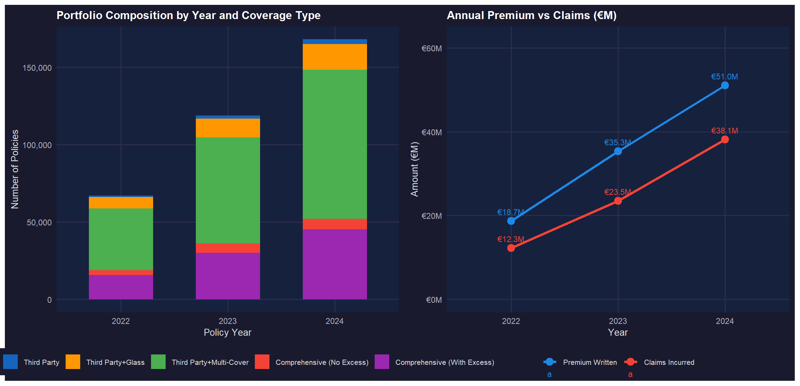
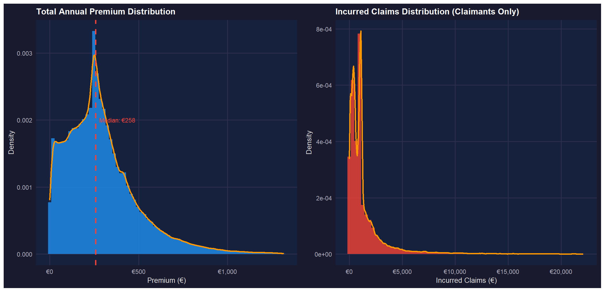
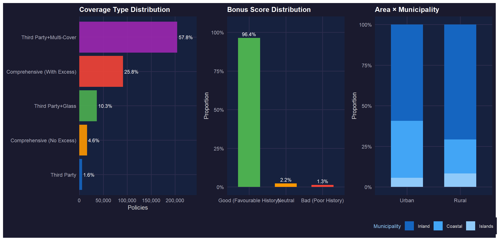
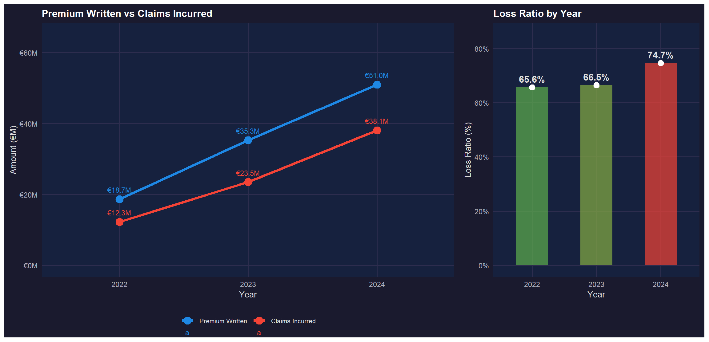
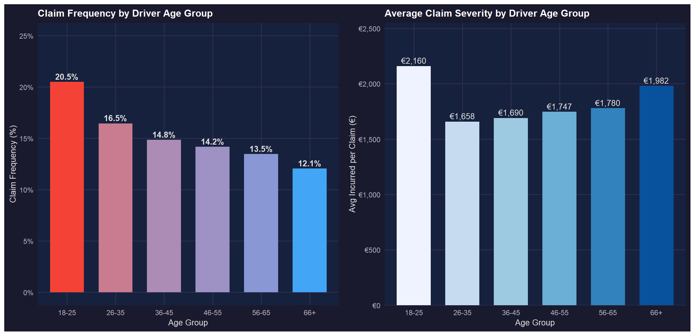
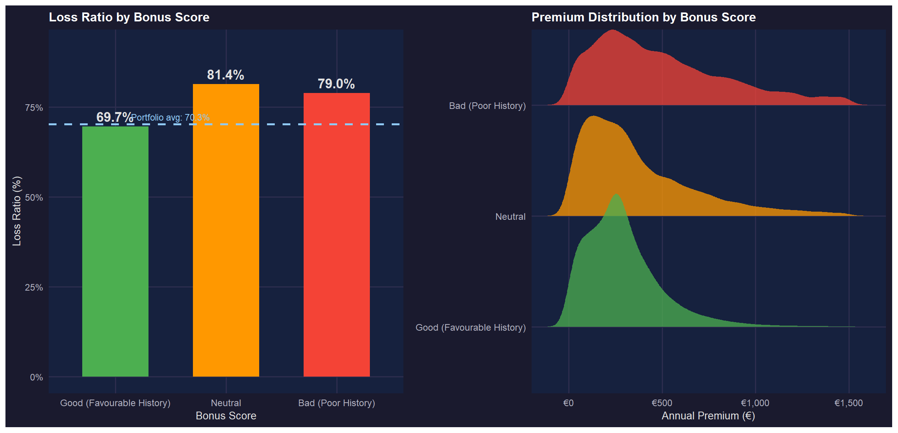
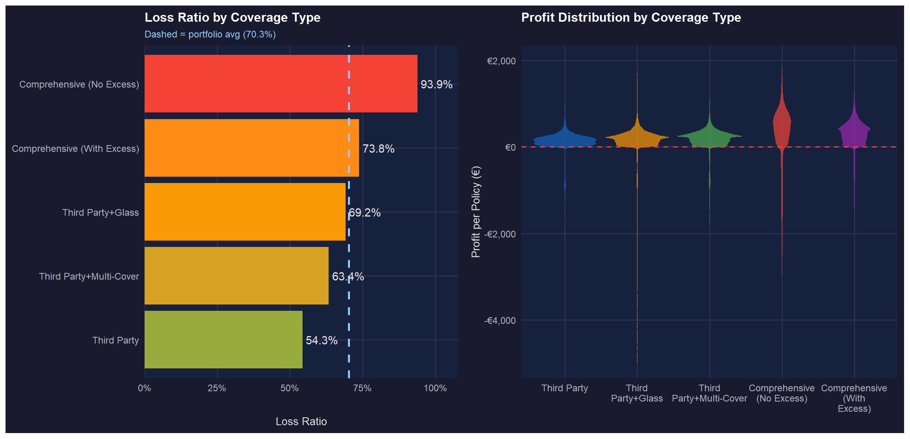
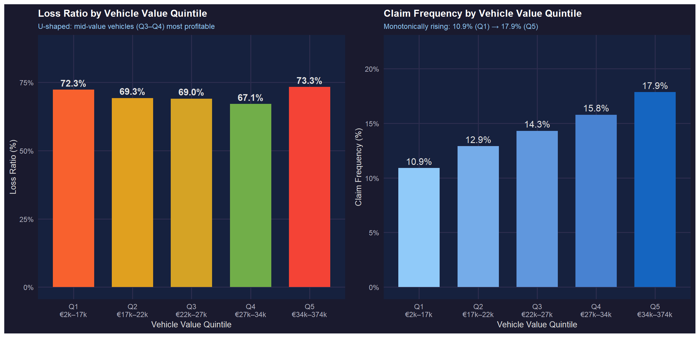
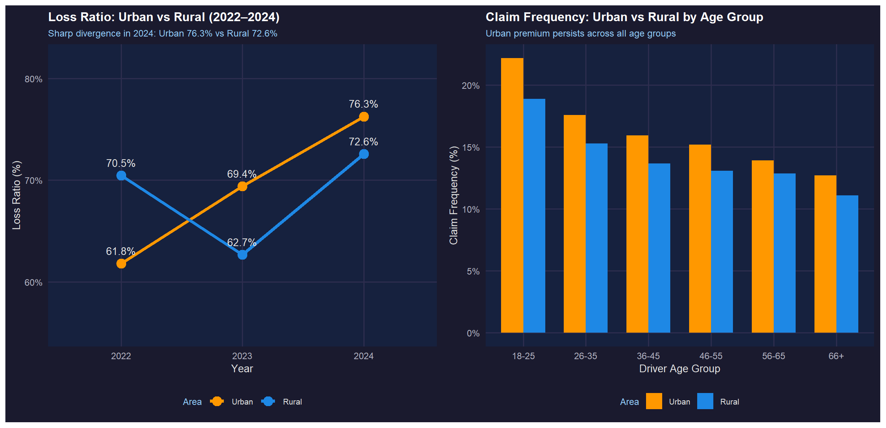
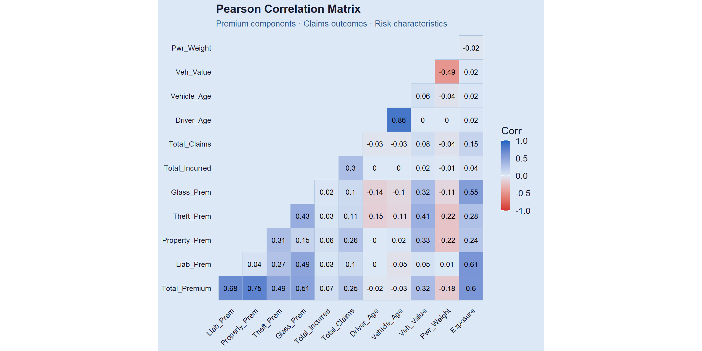

Visual Analytics for Data Discovery
2026-05-10










Critical Findings
🔴 2024 LR spike: 66% → 75% — 9 pp single-year jump; root cause investigation needed before any pricing action
🔴 COMP_N at 93.9% LR — no excess = no cost-sharing incentive; most urgent pricing problem in the portfolio
🟠 Neutral bonus score (81.4%) worse than Bad (79.0%) — counter-intuitive; current bonus-malus segmentation needs redesigning
🟠 Severity rises with age — 66+ most expensive at €1,982/claim despite lowest claim frequency (12.1%)
🟡 Vehicle value U-shaped LR — mid-value most profitable; frequency rises monotonically Q1→Q5 (10.9%→17.9%)
Recommended Actions
| Priority | Action |
|---|---|
| 🔴 High | Investigate 2024 LR spike — root cause analysis first |
| 🔴 High | Introduce mandatory minimum excess for COMP_N |
| 🔴 High | Redesign bonus-malus: increase Neutral & Bad loadings |
| 🟠 Medium | Age-specific severity loading for 66+ drivers |
| 🟠 Medium | Strengthen urban territorial rating factors |
| 🟡 Low | Monitor vehicle value frequency trend Q1→Q5 |
Premium–incurred r ≈ 0.07: individual outcomes are largely unpredictable — portfolio diversification is essential. Multivariate GLM or machine learning required for individual policy prediction.
Motor Insurance Portfolio — Visual Analytics